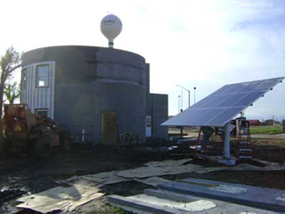
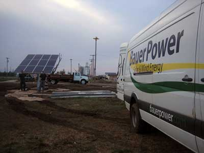

Two years ago, after a tornado destroyed nearly the entire town of Greensburg, Kan., residents decided that they would not only rebuild, they would redesign the town to be a model green community.
The nonprofit organization Greensburg GreenTown is building eco-homes (12 total) as a “living laboratory” of green design. Each home will showcase different building techniques and provide opportunities for visitors to learn about green building firsthand.
The first home, to be completed this summer, is called the Silo Eco-Home. It will serve as the organization’s office, and will provide space for demonstrations and overnight stays for visitors. The building is a 2,000-square-foot single-family home, with a 2-kilowatt solar-electric system, a cistern for rainwater harvesting, passive ventilation and water-saving technology. The concrete in the walls and roof will be made with crushed concrete recycled from the storm wreckage, making the structure strong enough to survive nearly any storm.
Learn more at the Greensburg GreenTown website.
|
 BAUER POWER The first home in a series of 12 eco-homes, called the Silo Eco-Home, is set to be completed in the summer of 2009. |
 BAUER POWER The residents of Greensburg are rebuilding with the Earth in mind. |
|